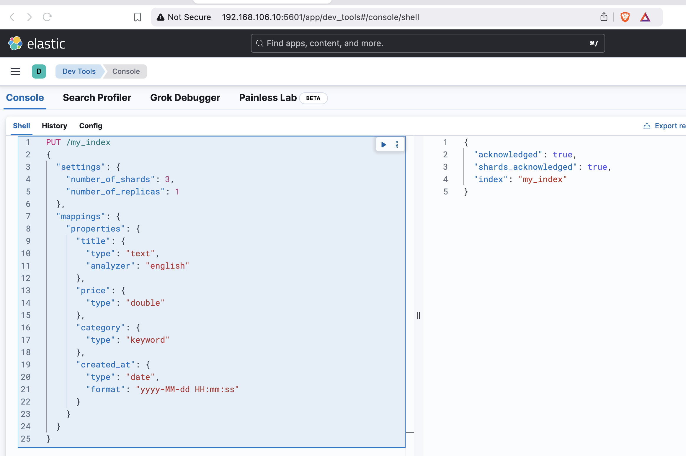

Lab2 DataModeling
Lab 2: Data Modeling¶
Setting Up Your Environment¶
Ensure your Elasticsearch cluster is running. If it is not set up yet, refer to the provided Docker setup instructions.
Where to Perform These Steps¶
The exercises in this lab can be performed in two environments:
- Kibana Dev Tools (Recommended): Use the Kibana GUI to run the Elasticsearch API requests interactively. This is ideal for experimenting and viewing results immediately. Access it via
http://<KIBANA_HOST>:5601, and navigate to Dev Tools -> Console.
Important: Kibana Dev Tools does not support comments in API requests. If copying the examples directly into Dev Tools, remove all comments from the requests.
- Command Line Interface (CLI): Use tools like
curlor HTTP clients to send API requests directly to your Elasticsearch cluster. Comments are supported in CLI scripts when prefixed with#.
Exercise 1: Creating an Index with Explicit Mappings¶
Task:¶
Create an index named my_index with explicit mappings.
Steps:¶
- Send a
PUTrequest to create the index:
Explanation:
- Settings:
- number_of_shards: Divides the data into 3 shards for scalability.
- number_of_replicas: Adds 1 replica for high availability.
- Mappings:
- title: A full-text searchable field analyzed with the english analyzer.
- price: A double field to store numerical values with decimals.
- category: A keyword field for exact-match filtering and sorting.
- created_at: A date field with a custom format for precise queries.
Request (without comments for Kibana Dev Tools compatibility):
PUT /my_index
{
"settings": {
"number_of_shards": 3,
"number_of_replicas": 1
},
"mappings": {
"properties": {
"title": {
"type": "text",
"analyzer": "english"
},
"price": {
"type": "double"
},
"category": {
"type": "keyword"
},
"created_at": {
"type": "date",
"format": "yyyy-MM-dd HH:mm:ss"
}
}
}
}
Reminder: If you are using the CLI (
curl), you can include inline comments for reference.
- Verify the index and its mappings:
- Use the
GETrequest to confirm the index was created and the mappings are correct.
GET /my_index/_mapping

Exercise 2: Indexing a Document¶
Task:¶
Index a document in the my_index index.
Steps:¶
- Use the following
POSTrequest to add a document:
POST /my_index/_doc/1
{
"title": "Getting Started with Elasticsearch",
"price": 49.99,
"category": "Books",
"created_at": "2024-02-10 10:00:00"
}
- Verify the document was indexed:
- This ensures the document can be retrieved.
GET /my_index/_doc/1
Exercise 3: Updating a Document¶
Task:¶
Update the price field in the document you created earlier.
Steps:¶
- Use the
_updateendpoint with aPOSTrequest to update only thepricefield:
POST /my_index/_update/1
{
"doc": {
"price": 39.99
}
}
- Verify the update:
- Check that the
pricefield now reflects the updated value.
GET /my_index/_doc/1
Exercise 4: Deleting a Document¶
Task:¶
Delete the document you created earlier.
Steps:¶
- Use the
DELETErequest to remove the document:
DELETE /my_index/_doc/1
- Confirm the deletion:
- Ensure the document no longer exists.
GET /my_index/_doc/1
Exercise 5: Exploring Dynamic Mapping¶
Task:¶
Index a document without predefining mappings and observe Elasticsearch’s dynamic mapping behavior.
Steps:¶
- Index a new document in a non-existent index:
POST /dynamic_index/_doc/1
{
"name": "Wireless Mouse",
"price": 25.99,
"features": ["Bluetooth", "Rechargeable"]
}
- Check the dynamically created mappings:
GET /dynamic_index/_mapping
Exercise 6: Creating Nested Documents¶
Task:¶
Index a nested document to represent hierarchical data.
Steps:¶
- Define a mapping with a nested field:
PUT /nested_index
{
"mappings": {
"properties": {
"product": {
"type": "nested",
"properties": {
"name": { "type": "text" },
"reviews": {
"type": "nested",
"properties": {
"user": { "type": "text" },
"rating": { "type": "integer" },
"comment": { "type": "text" }
}
}
}
}
}
}
}
- Index a nested document:
POST /nested_index/_doc/1
{
"product": {
"name": "Gaming Laptop",
"reviews": [
{ "user": "Alice", "rating": 5, "comment": "Excellent!" },
{ "user": "Bob", "rating": 4, "comment": "Great value." }
]
}
}
- Verify the nested document:
GET /nested_index/_doc/1
Exercise 7: Cleaning Up¶
Task:¶
Delete the indices created during the lab.
Steps:¶
- Use the
DELETErequest to remove indices:
DELETE /my_index
DELETE /dynamic_index
DELETE /nested_index
- Confirm the deletions:
GET /_cat/indices?v